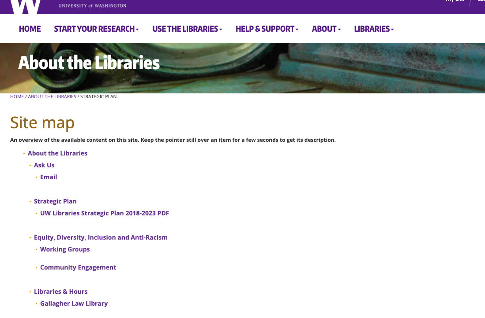
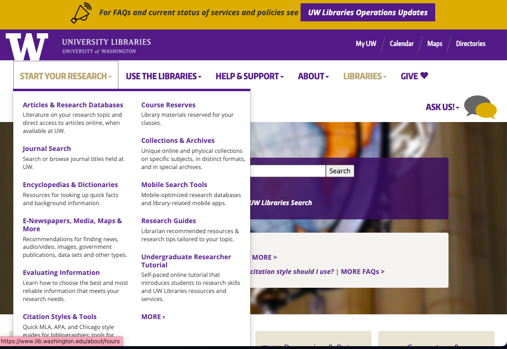
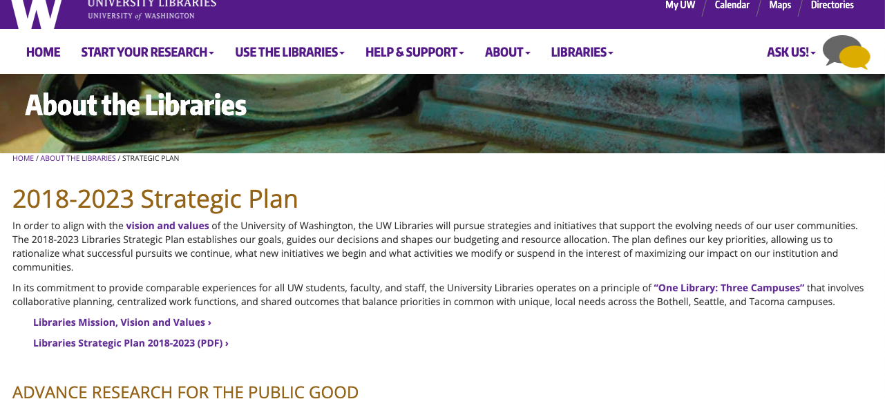

LIS 636 Evaluation 3
University of Washington Library
The skeleton plane includes the interface, navigation, and information design of a site. Evaluating the UW’s library site from the perspective of the skeleton plane, the site appears to be focused on the interface design and navigation design. From an interface design perspective, the user of the library site needs to be able to do things such as search for resources, connect to library events, borrow/reserve books, receive help and support, etc. The navigation design is also important to the skeleton plane because the user needs to be able to move through the navigations in order to go places in the site to have access to the resources and information in the site. I can see that the placement of the buttons at the top of the page, the photos, and the text blocks are all placed so as to maximize the design elements effect. The placement of the football helmet in the background emphasizes the importance of sports and team membership to the university’s image. The library search box is placed in the center which dictates the importance of this bar to the library site. The interface design enables the user to interact with the functionality of the system and navigation design allows the user to move through the information architecture. The interface for UW is successful because the user can easily see the important stuff. The navigation provides a way for the user to get from one place to another on the site, and it is arranged so that the user can see the relationships between the components. Pages are grouped together in a straightforward and intuitive way. The skeleton of the page stays the same after navigating to different pages, which allows the user to maintain a constant understanding of the page that the user is currently viewing in relation to the total navigation contents of the site. A site map is provided which provides the user with a hierarchical outline of the site “providing links to all the top-level sections with links to major second-level sections indented beneath them” (Jesse James, 2002)
The structure plane of the UW Library site delves into the interaction design and information architecture. Within the site, the user is able to move through the content of the site in a straightforward and logical way. Information is categorized in a way that is easy to follow. If a user wanted to find information on research they could easily find all information categorized together under the top menu item: “Start Your Research”
Other main categories include; Use the Libraries, Help & Support, About, Libraries, and Give. All of these main menu items create a well defined structure which enables access to the content in a well organized manner. The information is grouped together and the user doesn’t have to go out of the way to follow the structure. The design appears to include a top down approach driven by the strategy plane. .
Evaluating the UW Library Website from the scope plane perspective shows how the planes above and below directly affect and define the scope. The strategy dictates what the site will provide and the structure plane outlines the way to construct the information. These two elements dictate what the scope will be for the site. For the Univeristy of Washington Library, the main scope appears to be centered on how to conduct research and helping studnet utilize the library to meet educational goals. Everything in the site is centered on supporting these elements.
The UW Library contains a strategy plan which covers the years of 2018-2023.
University of Washington Library Strategic Plan 
Strategy includes meeting the needs of the user as well as the library. The first step of the strategy is to advance research. This is conveyed in the design by placing the “Start Your Research” button in first place on the top menu. The next item listed in the strategy is to “Enrich Student Experience.” The “Use the Library” button and “Help & Support” buttons help to achieve this goal by creating easy access to library resources such as access to the users library account, accessibility links, study and meeting spaces, and computers and printing access.